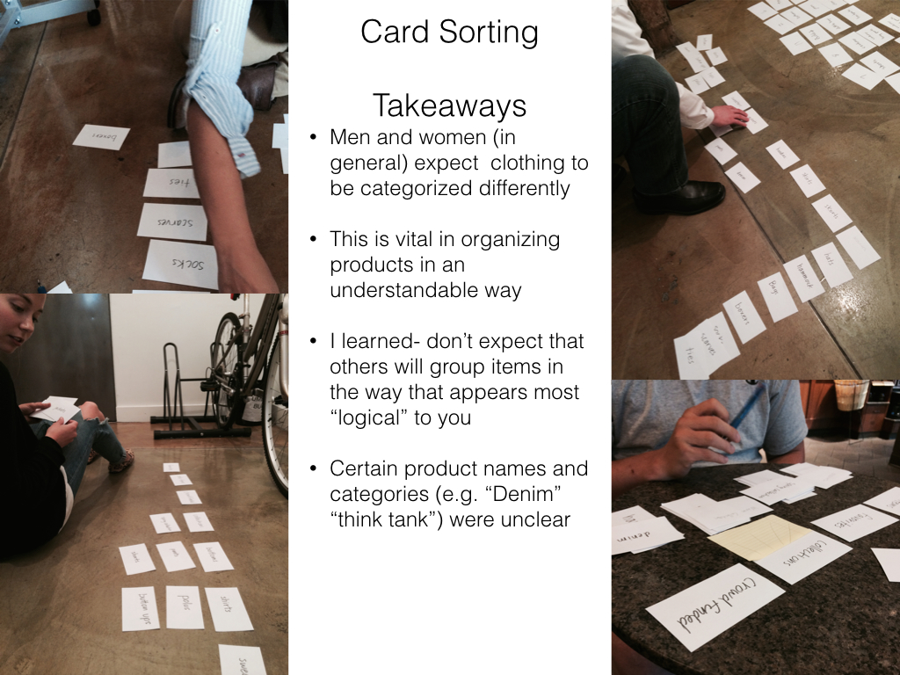
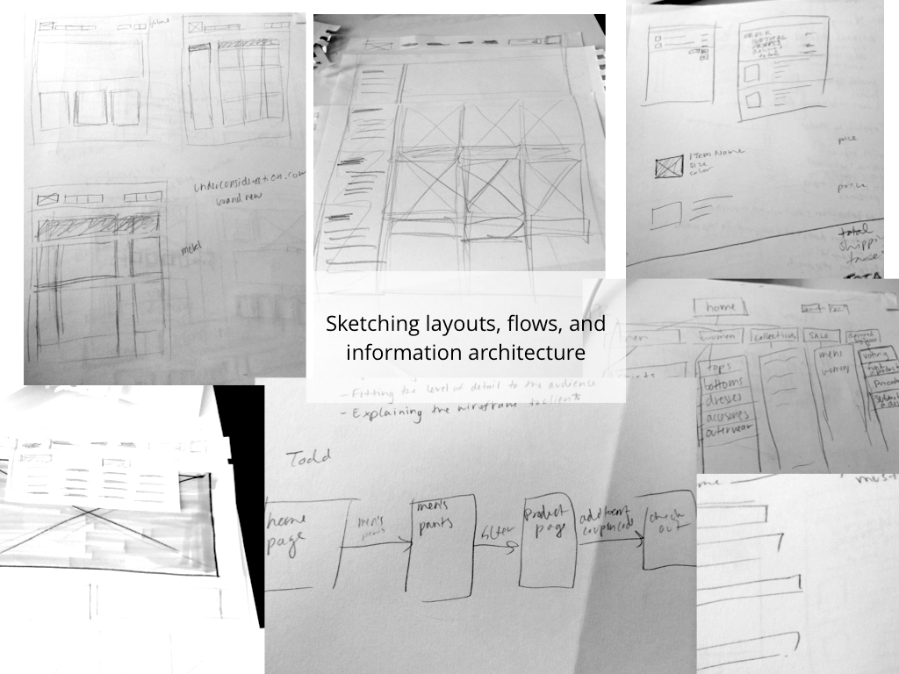
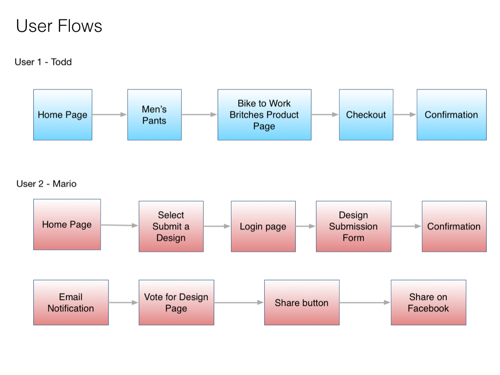
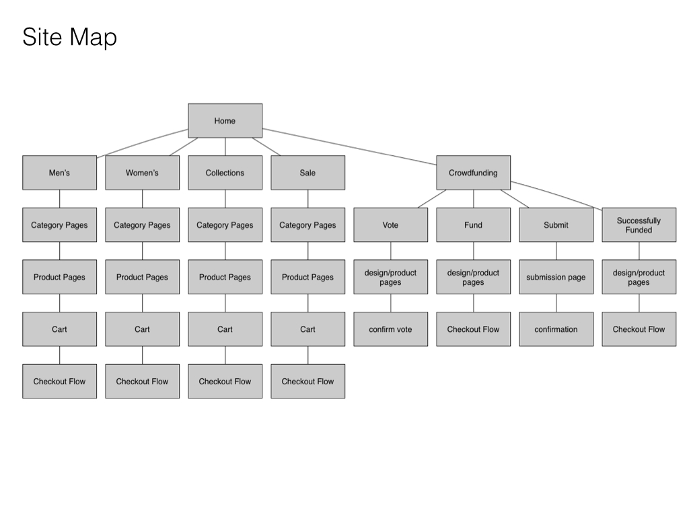
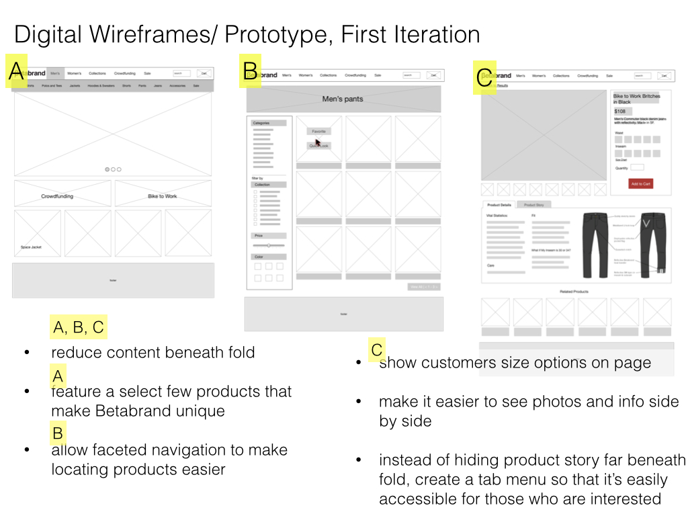
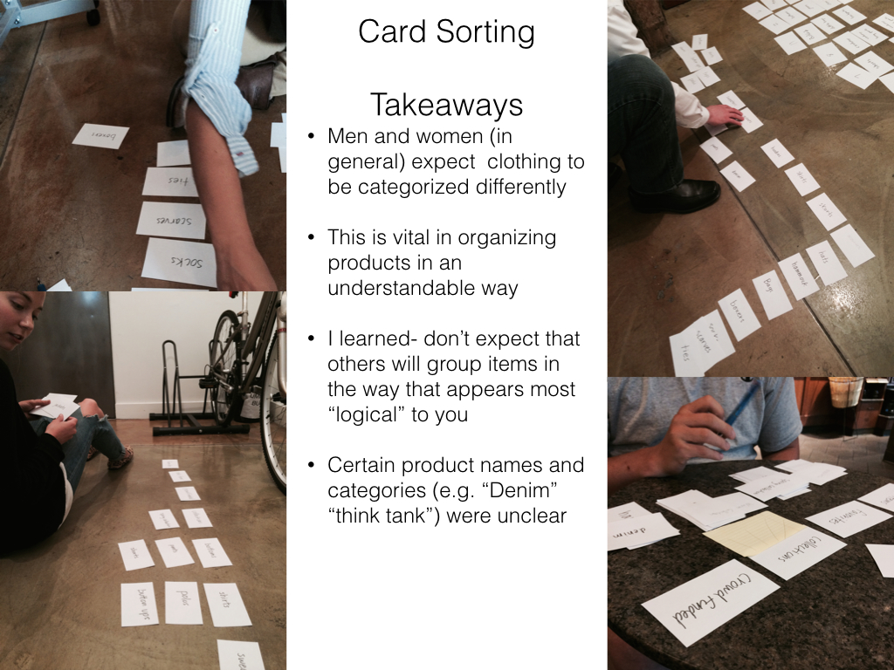
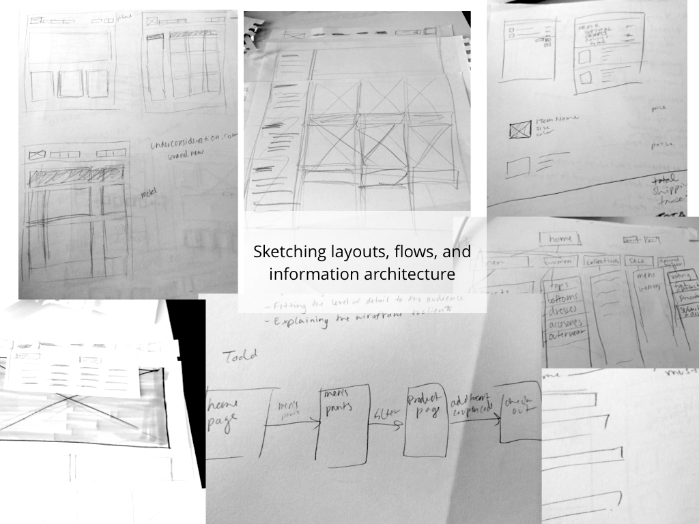
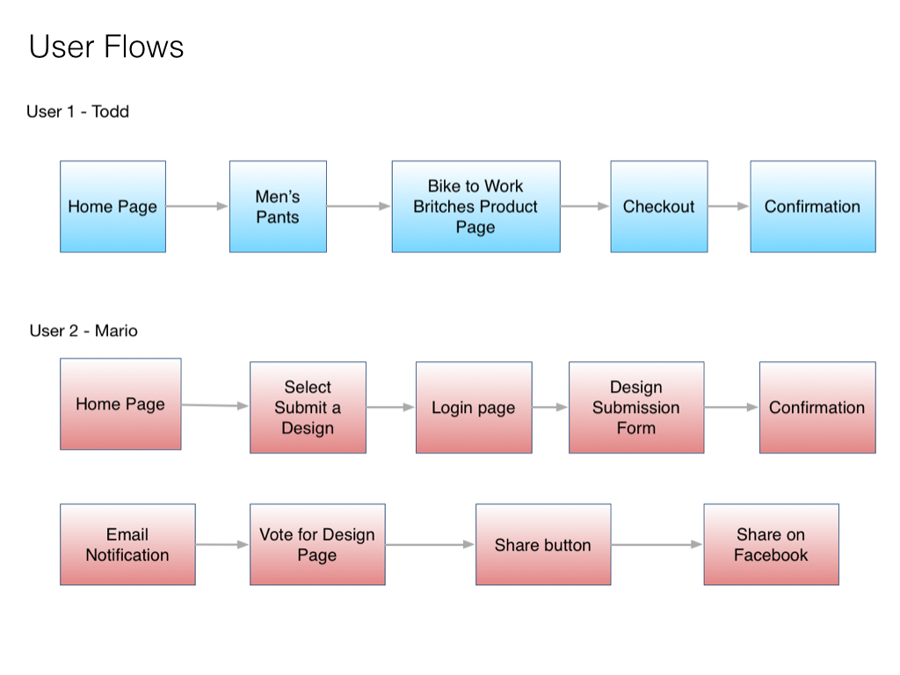
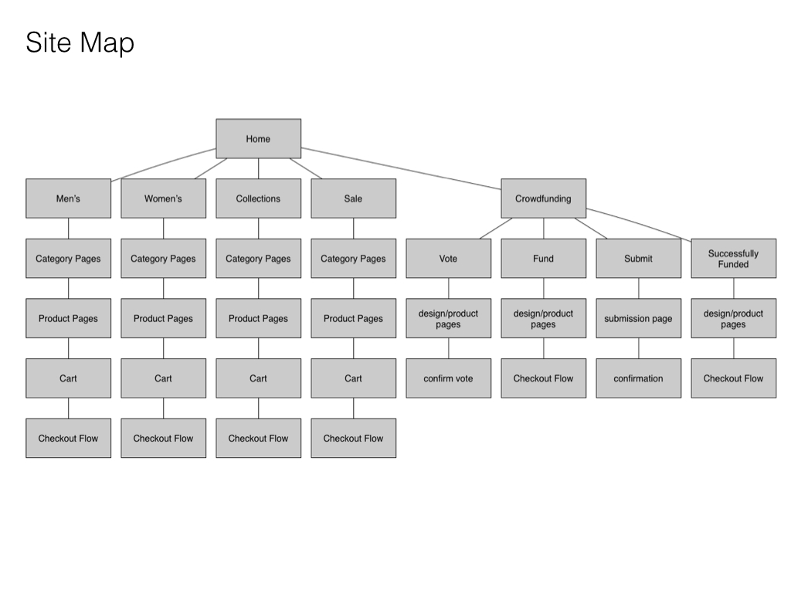
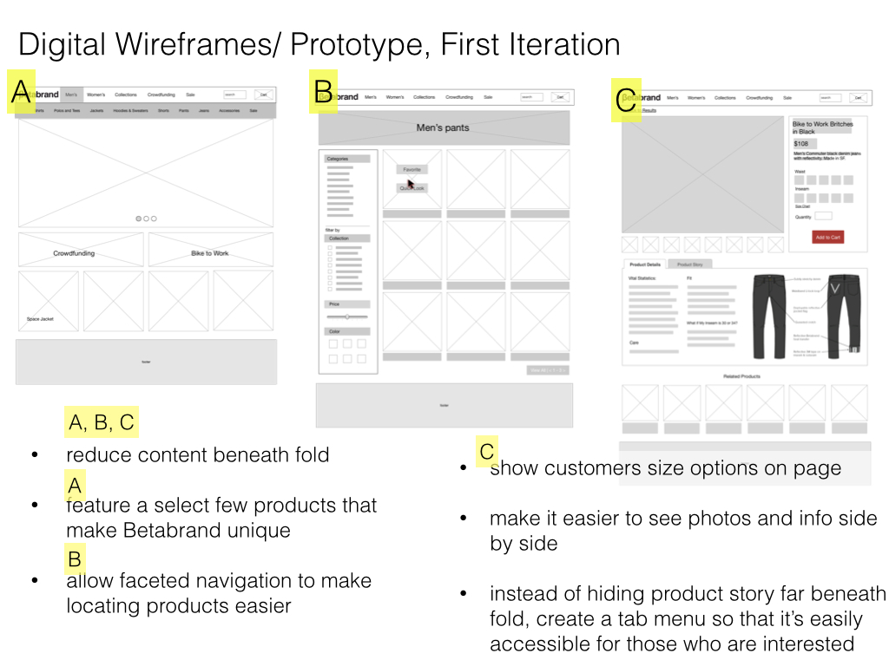

Betabrand Redesign
Betabrand is a clothing company based in San Francisco that carries unique and quirky products, including crowdsourced products. They have a small cult following but would like to expand their reach. Users found the products on their website difficult to navigate and the crowdfunding process difficult to understand and complete.
My Role
For this project I worked on information architecture, product display and filtering, product page layout and checkout flows.
View PrototypeThis will open Invision in a new tabHome Page - home page is decluttered, featuring only a few unique products rather than overwhelming the user
Product Category Page - added faceted navigation.
Product Page- created tabs to hold additional information to decrease info hidden below the fold
Product Page - created tabs to hold additional information to decrease info hidden below the fold
One Page Checkout - this would provide better visibility to the user to reduce errors
Order Review - allows user to double check all information before placing order
Process
I began by assesing the usability of the site, and conducting card sorting of product categories. I also did a lot of competitive analysis of ecommerce sites.
 
